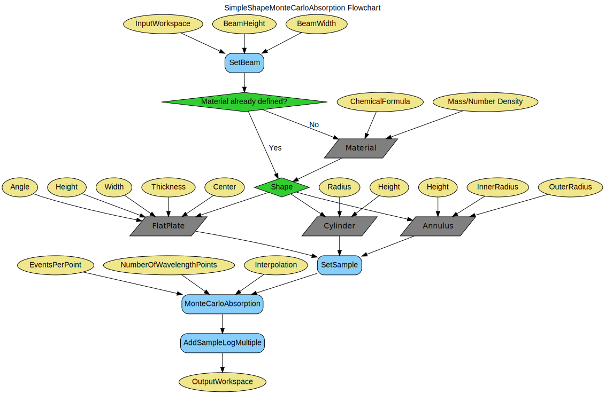

\(\renewcommand\AA{\unicode{x212B}}\)
SimpleShapeMonteCarloAbsorption v1¶
{kind=link}
SimpleShapeMonteCarloAbsorption dialog.¶
Summary¶
Calculates absorption corrections for a given sample shape.
See Also¶
Properties¶
Name |
Direction |
Type |
Default |
Description |
|---|---|---|---|---|
InputWorkspace |
Input |
Mandatory |
Input workspace |
|
MaterialAlreadyDefined |
Input |
boolean |
False |
Select this option if the material has already been defined |
ChemicalFormula |
Input |
string |
Chemical formula of sample |
|
CoherentXSection |
Input |
number |
Optional |
The coherent cross section of the sample in barns. It can be used instead of theChemical Formula. |
IncoherentXSection |
Input |
number |
Optional |
The incoherent cross section of the sample in barns. It can be used instead of theChemical Formula. |
AttenuationXSection |
Input |
number |
Optional |
The absorption cross section of the sample in barns. It can be used instead of theChemical Formula. |
DensityType |
Input |
string |
Mass Density |
Use of Mass density or Number density. Allowed values: [‘Mass Density’, ‘Number Density’] |
Density |
Input |
number |
0.1 |
The value for the Mass density (g/cm^3) or Number density (1/Angstrom^3). |
NumberDensityUnit |
Input |
string |
Atoms |
Choose which units Density refers to. Allowed values: [Atoms, Formula Units]. Allowed values: [‘Atoms’, ‘Formula Units’] |
NumberOfWavelengthPoints |
Input |
number |
10 |
Number of wavelengths for calculation |
EventsPerPoint |
Input |
number |
1000 |
Number of neutron events |
Interpolation |
Input |
string |
Linear |
Type of interpolation. Allowed values: [‘Linear’, ‘CSpline’] |
MaxScatterPtAttempts |
Input |
number |
5000 |
Maximum number of tries made to generate a scattering point |
BeamHeight |
Input |
number |
1 |
Height of the beam (cm) |
BeamWidth |
Input |
number |
1 |
Width of the beam (cm) |
Shape |
Input |
string |
FlatPlate |
Geometry of sample environment. Options are: FlatPlate, Cylinder, Annulus. Allowed values: [‘FlatPlate’, ‘Cylinder’, ‘Annulus’] |
Height |
Input |
number |
0 |
Height of the sample environment (cm) |
Width |
Input |
number |
0 |
Width of the FlatPlate sample environment (cm) |
Thickness |
Input |
number |
0 |
Thickness of the FlatPlate sample environment (cm) |
Center |
Input |
number |
0 |
Center of the FlatPlate sample environment |
Angle |
Input |
number |
0 |
Angle of the FlatPlate sample environment with respect to the beam (degrees) |
Radius |
Input |
number |
0 |
Radius of the Cylinder sample environment (cm) |
OuterRadius |
Input |
number |
0 |
Outer radius of the Annulus sample environment (cm) |
InnerRadius |
Input |
number |
0 |
Inner radius of the Annulus sample environment (cm) |
OutputWorkspace |
Output |
Mandatory |
The output corrected workspace. |
Warning
This algorithm is deprecated in favour of PaalmanPingsMonteCarloAbsorption.
Description¶
Sets up a sample shape, along with the required material properties, and runs the MonteCarloAbsorption algorithm. This algorithm merely serves as a simpler interface to define the shape & material of the sample without having to resort to the more complex CreateSampleShape & SetSampleMaterial algorithms. The computational part is all taken care of by MonteCarloAbsorption. Please see that documentation for more details. Currently the shape geometries supported are:
Flat Plate
Cylinder
Annulus
Workflow¶
Usage¶
Example
qens_ws = CreateSampleWorkspace(Function="Quasielastic",
XUnit="Wavelength",
XMin=-0.5,
XMax=0.5,
BinWidth=0.01)
corrected = SimpleShapeMonteCarloAbsorption(InputWorkspace = qens_ws,
ChemicalFormula = 'H2-O',
DensityType = 'Mass Density',
Density = 1.0,
EventsPerPoint = 200,
BeamHeight = 3.5,
BeamWidth = 4.0,
Height = 2.0,
Shape = 'FlatPlate',
Width = 1.4,
Thickness = 2.1)
print("y-axis label: {}".format(corrected.YUnitLabel()))
Output:
y-axis label: Attenuation factor
Categories: AlgorithmIndex | Workflow\Inelastic | CorrectionFunctions\AbsorptionCorrections | Workflow\MIDAS